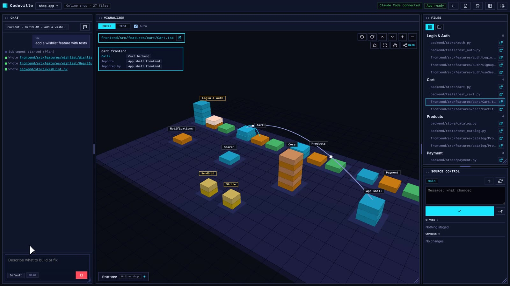

See what your AI builds.
Codeville is a Windows app that works alongside Claude Code. It draws your project as a 3D block town, shows every file your agent writes as it writes it, runs your tests as a walk-through, and commits and pushes in one click.
Windows 10 and 11 · Python is bundled · All releases

Your agent writes the code. Codeville shows you what it did.
Vibe coding is fast, but reading every diff is slow. Codeville keeps up with your agent so you always know what changed, what broke, and what to do next.
Understand any project
Open a folder and see its stack, its features and how the parts connect, drawn as a town.
Watch your agent work
Every edit, tool call and sub-agent appears live, and new files light up where they belong.
See exactly what broke
Tests run as a walk through your app and stop at the failing step, with the file and the fix.
Ship from the same window
Stage, commit and push in one click. Failures say what went wrong and the next step.
Everything in one window.
Each clip below is the real app, recorded on a sample online store.
Know a new project in seconds.
When you open a folder, an analysis agent reads the README, the package files and the code, then reports what the project is and how it is built.
- Frontend, backend, database and outside services, found from your files
- Files grouped into features across layers
- Finds your own test, lint, type check and build commands
Your codebase as a town you can walk around.
Every feature becomes a district, every layer a building, every file a block. Rotate and zoom to see the whole project at once.
- Colours for frontend, backend, tests, database and services
- Links show calls, imports and database use between buildings
- Click a block to see the file and open it in the editor
Prompt it, and watch every file land.
Type what you want in the chat. Claude Code runs in your project, and each step it takes appears as it happens, while new files light up in the town.
- Edits, tool calls and sub-agents, listed live
- Uses your own Claude Code settings and hooks
- Changed files collect in Source control for review
Tests you can see.
Press play and a shopper walks your test cases one by one. It stops at the first failure and tells you what broke, in which file, and what to do next.
- Every test case becomes a step on the route
- The failing building is marked in the town
- Clear next steps you can hand straight to your agent
Commit and push in one click.
Changed files show their git status. Stage them, write a message, and commit and push without leaving the app.
- Uses the git login already on your computer
- Push problems explained, with a fix button where there is one
- No credentials stored by the app
Steer your project with your hands.
Turn on the camera and the town becomes a see-through hologram you control with gestures. Good for walking a teammate or a room through a project.
- Open hand to turn, two hands to zoom, fist to hold, double pinch to reset
- Hand tracking runs on your computer; no picture leaves it
- Optional: everything else works with the mouse
Up and running in three steps.
Install
Download Codeville-Setup.exe and run it. Python comes inside the installer, so there is nothing else to set up.
Connect Claude Code
The welcome screen checks Git, Claude Code and Node.js, then adds the Codeville plugin in one click. Or by hand:
/plugin marketplace add <plugin folder>
/plugin install code-visualizer@code-visualizerOpen a project
Open a folder, start from a template (Empty, Node, Python) or copy a repository. Your town appears in seconds.
Requirements
- System
- Windows 10 or 11, 64-bit
- Agent
- Claude Code
- Also needed
- Git; Node.js for JavaScript projects
- Bundled
- Python 3.12 and the app's backend
- Optional
- A webcam, for hologram mode
Private by design
- The app's backend listens on your computer only, behind a local token
- Your code is read on your computer and never uploaded by Codeville
- Hand tracking runs locally; no camera picture leaves your PC
- Git uses your existing login; the app stores no credentials
Questions, answered.
Who is Codeville for?
Anyone who builds with a coding agent: vibe coders, people learning to code, and developers who want to see what their agent changed without reading every diff.
Windows warns me when I run the installer. Is that normal?
Yes. The installer is not code signed yet, so SmartScreen shows a warning the first time. Choose More info, then Run anyway. Each release lists the installer's SHA-256 checksum so you can check the file.
Does my code leave my computer?
Not through Codeville. Its backend runs on your computer only. Claude Code itself talks to Anthropic as it always does.
Which coding agents work with it?
Claude Code, through the Codeville plugin. Other agents can use the same project tools (project map, analysis, test runs, git status) over the app's local API.
What kinds of projects can I open?
Any folder. The analysis recognises common stacks such as React, Vite, Django, Node and Python, and finds your test and build commands.
Do I need a camera?
No. The camera is only for hologram mode. Rotate, zoom and reset buttons sit in the corner of the town.
Vibe code. See it build.
Download Codeville for Windows and open your first project in a minute.